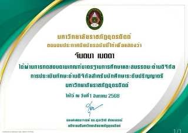
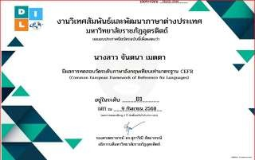
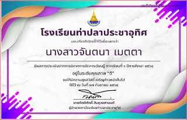
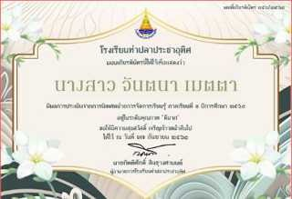

รายงานการศึกษา พลังงานขยะ (Waste-to-Energy)
พลังงานขยะ หมายถึง การเปลี่ยนขยะมูลฝอยให้เป็นพลังงานในรูปแบบต่างๆ เช่น ไฟฟ้า ความร้อน และ เชื้อเพลิง โดยใช้เทคโนโลยีการแปรรูป เช่น การเผา การหมักแบบไม่ใช้ออกซิเจน และการย่อยสลายด้วยแก๊สซิฟิเคชัน เพื่อนำไปใช้ประโยชน์และลดปริมาณขยะ โดยจะต้องมีการคัดแยกขยะก่อนทุกครั้ง เพื่อนำขยะที่สามารถใช้ได้มากลับมาใช้ใหม่ ก่อนจะนำเข้าสู่กระบวนการที่สามารถนำไปผลิตเป็นพลังงานต่างๆ ได้
ข้อดีของเทคโนโลยีการจัดการขยะแต่ละประเภท
Landfill Gas to Energy
- สามารถกําจัดขยะมูลฝอยได้ทุกประเภท
- ไม่จําเป็นต้องมีระบบคัดแยกก่อน
Incineration
- ลดปริมาตรขยะได้สูงสุดถึง 90% ช่วยแก้ปัญหาพื้นที่ฝังกลบเต็มได้อย่างรวดเร็ว
- สามารถผลิตพลังงานไฟฟ้าและไอน้ําได้อย่างต่อเนื่องและสม่ําเสมอ
RDF (Refuse Derived Fuel)
- เปลี่ยนขยะให้เป็นสินค้าพลังงานที่มีมาตรฐาน ขนส่งและจัดเก็บง่าย
- ชุมชนยอมรับได้ดีเพราะภาพลักษณ์สะอาดและไม่มีกลิ่นรบกวนเหมือนขยะสด
Gasification
- ปล่อยมลพิษทางอากาศน้อยกว่าเตาเผาทั่วไปเนื่องจากเป็นระบบปิด
- ได้ก๊าซสังเคราะห์ (Syngas) ที่นำไปใช้ประโยชน์ได้หลากหลาย
Anaerobic Digestion
- จัดการ "ขยะอินทรีย์" (เศษอาหาร/ผัก) ซึ่งเป็นต้นเหตุของกลิ่นเหม็นได้อย่างเบ็ดเสร็จ
- ได้ผลพลอยได้เป็นปุ๋ยอินทรีย์คุณภาพสูงสำหรับใช้ในการเกษตร
Pyrolysis
- เป็นวิธีที่ดีที่สุดในการจัดการ "ขยะพลาสติกและยาง" ให้กลับมาเป็นน้ำมันเชื้อเพลิง
- ผลิตภัณฑ์ที่ได้ (น้ำมัน/ถ่านชา) มีมูลค่าการตลาดสูงกว่าการขายไฟฟ้า
ข้อเสียของเทคโนโลยีการจัดการขยะแต่ละประเภท
Landfill Gas to Energy
- ต้องมีระบบรองพื้นที่ดีเพื่อป้องกันน้ำใต้ดินปนเปื้อน
- ต้องมีระบบรวบรวมก๊าซชีวภาพที่มีประสิทธิภาพ
Incineration
- เงินลงทุนสูงมาก โดยเฉพาะระบบบัดมลพิษทางอากาศ
- ชุมชนยอมรับต่ำเนื่องจากกังวลเรื่องสารไดออกซินและฝุ่นละออง
RDF (Refuse Derived Fuel)
- มีความเสี่ยงด้านอัคคีภัยสูงในการจัดเก็บก้อนเชื้อเพลิงแห้ง
- ต้องมีระบบคัดแยกขยะต้นทางที่เข้มงวดเพื่อให้ได้คุณภาพตามที่อุตสาหกรรมต้องการ
Gasification
- เทคโนโลยีมีความซับซ้อน ต้องการผู้เชี่ยวชาญในการควบคุมระบบ
- ขยะต้องมีความสม่ำเสมอและต้องผ่านการเตรียมตัว (Pre-treatment)
Anaerobic Digestion
- ใช้ได้เฉพาะกับขยะอินทรีย์เท่านั้น ไม่รองรับพลาสติกหรือขยะทั่วไป
- ต้องระวังเรื่องการสะสมของก๊าซมีเทนที่อาจระเบิดได้หากระบบไม่ระบายอากาศที่ดี
Pyrolysis
- ต้นทุนการลงทุนสูงที่สุดเนื่องจากต้องใช้เครื่องจักรทนความร้อนและความดันสูง
- มีความเสี่ยงต่อการระเบิดสูงหากมีออกซิเจนรั่วเข้าสู่เตาปฏิกรณ์ขณะร้อน
Landfill Gas to Energy
ใช้พื้นที่ที่ใช้ในการก่อสร้างมากที่สุด เมื่อเทียบกับทุกเทคโนโลยี เนื่องจากต้องใช้พื้นที่ในการรองรับปริมาณขยะมูลฝอยมหาศาลมหาศาล และต้องมีระยะห่างจากชุมชนตามที่กฎหมายกำหนด ใช้งบประมาณสูงถึง 10 - 50 ล้านบาท สำหรับระบบดึงก๊าซและปั่นไฟฟ้า
Incineration
ใช้พื้นที่น้อย ลดปริมาตรขยะได้ถึง 90% และนำพลังงานความร้อนมาผลิตเป็นกระแสไฟฟ้าได้อย่างต่อเนื่อง
RDF (Refuse Derived Fuel)
เปลี่ยนขยะให้เป็นก้อนเชื้อเพลิงที่มีมูลค่าการตลาดสูง ใช้พื้นที่ประมาณ 5 - 10 ไร่ สำหรับโรงงานผลิตก้อน RDF เน้นพื้นที่สำหรับเครื่องจักรคัดแยก เครื่องบด และพื้นที่จัดเก็บสำเร็จรูป
Gasification
นวัตกรรมที่ชุมชนให้การยอมรับได้สูง อาศัยพื้นที่ติดตั้งค่อนข้างน้อย เพียงประมาณ 5-15 ไร่
Anaerobic Digestion
เปลี่ยนขยะให้กลายเป็นก๊าซหุงต้มหรือปุ๋ยอินทรีย์ช่วยให้ชาวบ้านเห็นประโยชน์ที่เป็นรูปธรรมทันที งบประมาณอยู่ในช่วง 500,000 - 2,000,000 บาทขึ้นอยู่กับระบบบดและปริมาณขยะ
Pyrolysis
ความคุ้มค่าจะอยู่ที่การจำหน่าย "น้ำมัน" และ "ถ่านชา" ซึ่งมีมูลค่าการตลาดสูงกว่าไฟฟ้า งบประมาณก่อสร้างอยู่ที่ 100 ล้านบาทขึ้นไป
ยังไม่ได้รับการยอมรับจากชุมชนอย่างแพร่หลายเนื่องจากภาพลักษณ์เรื่องกลิ่นเหม็นและแมลงวัน
การควบคุมมลพิษทางอากาศ: ต้องมีระบบดักจับฝุ่นละออง, ระบบฉีดพ่นสารเคมีเพื่อสะเทินก๊าซกรด และระบบกำจัดสารไดออกซินด้วยคาร์บอนกัมมันต์ ระบบควบคุมอุณหภูมิท้องรักษาอุณหภูมิในห้องเผาไหม้ให้สูงกว่า 850 °C ตลอดเวลา
การยอมรับของชุมชนสูง เนื่องจากดูสะอาด พกพาง่าย และไม่มีกลิ่นเหม็นเหมือนขยะสด ชุมชนมักมองว่าเป็นผลิตภัณฑ์ที่มีมูลค่ามากกว่าการมองว่าเป็นขยะ ทำให้ลดแรงต้านได้ดี
มีลักษณะเป็น "ระบบปิด" ที่ควบคุมมลพิษ กลิ่น และเขม่าควันได้อย่างมีประสิทธิภาพมากกว่าการเผาไหม้ทั่วไป ทำให้ลดแรงต้านจากชาวบ้านรอบข้างได้ดี
ได้รับการยอมรับสูงและรวดเร็ว เนื่องจากจัดการกับ "ขยะที่สร้างปัญหาที่สุด" คือเศษอาหารและขยะเปียก ซึ่งเป็นต้นเหตุของกลิ่นเหม็น น้ำเสีย และพาหะนำโรค
เป็นระบบปิดที่ช่วยกำจัดขยะพลาสติกและยางรถยนต์ที่ย่อยสลายยากที่สุดได้อย่างถาวร แต่หากมีออกซิเจนเล็ดลอดเข้าไปขณะที่เตาร้อนจัด อาจเกิดการระเบิดได้ ต้องเข้มงวดระบบรักษาความปลอดภัย
แผนการจัดการเรียนรู้ Lesson Plan
มาตรฐานการเรียนรู้
3. เข้าใจแรงไฟฟ้าและกฎของคูลอมบ์ สนามไฟฟ้า ศักย์ไฟฟ้า กระแสไฟฟ้า กฎของโอห์ม วงจรไฟฟ้า พลังงานไฟฟ้าและกําลังไฟฟ้า การเปลี่ยนพลังงานความร้อนเป็นพลังงานไฟฟ้า
ผลการเรียนรู้
2. อธิบายและคํานวณความร้อนที่ทําให้สารเปลี่ยนอุณหภูมิและความร้อนที่ทําให้สารเปลี่ยนสถานะ
วัตถุประสงค์การเรียนรู้
Knowledge
(K)
นักเรียนสามารถอธิบายหลักการถ่ายโอนความร้อนและการเปลี่ยนสถานะของน้ําในกระบวนการผลิตไฟฟ้าจากขยะได้ถูกต้อง
Process
(P)
นักเรียนสามารคํานวณหาค่าความร้อนที่ได้จากเชื้อเพลิงขยะประเภทต่างๆ ได้
Attitude
(A)
นักเรียนมีความตระหนักถึงความสําคัญของการคัดแยกขยะเพื่อเพิ่มประสิทธิภาพทางพลังงานและรักษาสิ่งแวดล้อม
สาระสำคัญ
การจัดการขยะด้วยเทคโนโลยีความร้อน เช่น การเผา (Incineration) หรือการสลายด้วยความร้อน (Pyrolysis) เป็นการอาศัยหลักการทางอุณหพลศาสตร์ โดยเปลี่ยนพลังงานเคมีในขยะพลาสติกหรือขยะเชื้อเพลิง RDF ให้เป็นพลังงานความร้อน เพื่อทําให้น้ําเปลี่ยนสถานะเป็นไอ (Phase Change) ภายใต้ความดันสูง (Fluid Mechanics) เพื่อไปปั่นกังหันผลิตไฟฟ้า
เอกสารแผนการจัดการเรียนรู้ฉบับจริง
การทดลอง หาค่าความร้อนของกากมะพร้าว
กากมะพร้าวถูกจัดเป็น ชีวมวล (Biomass) ซึ่งถือเป็นพลังงานสะอาดกว่าฟอสซิลในแง่ของวงจรคาร์บอนเพราะคาร์บอนไดออกไซด์ที่ปล่อยออกมาจากการเผาไหม้ คือคาร์บอนที่ต้นมะพร้าวดูดซับมาจากอากาศในช่วงที่มันเติบโต ทําให้ไม่เป็นการเพิ่มก๊าซเรือนกระจกใหม่เข้าไปในระบบอย่างถาวรเหมือนการขุดน้ํามันหรือถ่านหินขึ้นมาใช้
คุณสมบัติของกากมะพร้าว
ค่าความร้อนสูง (HHV)
17.50 - 20.10 MJ/kg
กรมพัฒนาพลังงานทดแทนและอนุรักษ์
พลังงาน (2563)
ความชื้น (Moisture)
10% - 15% (ฐานแห้ง)
สถาบันวิจัยวิทยาศาสตร์และเทคโนโลยี
แห่งประเทศไทย (2565)
ปริมาณสารระเหย (VM)
75.0% - 82.0%
รายงานสถานภาพพลังงานชีวมวลไทย
มหาวิทยาลัยเกษตรศาสตร์ (2564)
ปริมาณเถ้า (Ash)
1.5% - 2.8%
วารสารวิจัยพลังงาน, จุฬาลงกรณ์
มหาวิทยาลัย (2562)
ปริมาณคาร์บอน (C)
44.5% - 48.2%
ฐานข้อมูลคุณลักษณะเชื้อเพลิงชีวมวล
พพ. (2563)
ตารางบันทึกผลการทดลอง
| ครั้งที่ | อุณหภูมิสูงสุด °C | อุณหภูมิเพิ่มขึ้น °C | ค่าความร้อนของฟิวส์ cal | ค่าความร้อนสูง cal/g |
|---|---|---|---|---|
| 1 | 27.25 | 2.74 | 18.40 | 6,614.73 |
| 2 | 27.58 | 2.47 | 17.94 | 5,963.51 |
| 3 | 27.52 | 2.37 | 18.63 | 5,716.71 |
| เฉลี่ย | 27.45 | 2.53 | 18.32 | 6,098.32 |
น้ำหนักของเชื้อเพลิง ที่ใช้ คือ 1.00g
ชนิดของเชื้อเพลิงที่ทำการทดลองคือ กากมะพร้าว
ตารางบันทึกคุณสมบัติทางเคมี
| ปริมาณการวิเคราะห์ | ครั้งที่ 1 | ครั้งที่ 2 | ครั้งที่ 3 | ค่าเฉลี่ย |
|---|---|---|---|---|
| ความหนาแน่น (g/cm³) | 0.62 | 0.65 | 0.63 | 0.63 |
| ปริมาณความชื้น (%) | 5.50 | 6.20 | 5.90 | 5.87 |
| ปริมาณเถ้า (%) | 1.15 | 1.25 | 1.20 | 1.20 |
ข้อมูลส่วนตัว Profile
ประวัติทั่วไป
ชื่อ-นามสกุล: จันตนา เมตตา
รหัสนักศึกษา: 65031620104
วันเกิด: 5 กุมภาพันธ์ 2547
กำลังศึกษา: คณะครุศาสตร์ สาขาวิทยาศาตร์ วิชาเอกฟิสิกส์ มหาวิทยาลัยราชภัฏอุตรดิตถ์
ที่อยู่ตามบัตรประชาชน: 66/1 ม.1 ต.น้ำหมัน อ.ท่าปลา จ.อุตรดิตถ์
ที่อยู่ปัจจุบัน: 66/1 ม.1 ต.น้ำหมัน อ.ท่าปลา จ.อุตรดิตถ์
ประวัติการศึกษา (พื้นฐาน)
ประถมศึกษา (2553-2558)
โรงเรียน จริมอนุสรณ์ 1
มัธยมศึกษาตอนต้น (2559-2561)
โรงเรียนเตรียมอุดมศึกษาน้อมเกล้า อุตรดิตถ์
มัธยมศึกษาตอนปลาย (2562-2564)
โรงเรียนเตรียมอุดมศึกษาน้อมเกล้า อุตรดิตถ์
ช่องทางการติดต่อ
เบอร์โทร: 082-1171102
Email: jantanamatana62@gmail.com
Line ID: Chantana030
ผลงานทางการศึกษา Education & Certificates

เกียรติบัตรทักษะด้านดิจิทัล มหาวิทยาลัยราชภัฏอุตรดิตถ์
ผ่านการทดสอบตามเกณฑ์มาตรฐานสมรรถนะด้านดิจิทัล
1 สิงหาคม 2568
ผลการทดสอบภาษาอังกฤษมาตรฐาน CEFR
ระดับ B1 จากงานวิเทศสัมพันธ์ มหาวิทยาลัยราชภัฏอุตรดิตถ์
9 กันยายน 2568
ผลการประเมินการจัดการเรียนรู้และแผนการจัดการเรียนรู้
ได้ระดับคุณภาพ 'ดี' ถึง 'ดีมาก' จากการนิเทศภายใน
ภาคเรียนที่ 1/2568เกียรติบัตร E-PLC จรรยาบรรณวิชาชีพ
ผ่านการพัฒนาด้วยบทเรียนและบอร์ดเกมจรรยาบรรณวิชาชีพ
25 กันยายน 2568
ผลการประเมินนิเทศหน่วยการจัดการเรียนการรู้
ภาคเรียนที่ 1 ปีการศึกษา 2568
17 กันยายน 2568ประวัติการทำงาน Experience
โรงเรียนฝึกประสบการณ์วิชาชีพครู (ปีที่ 1-4)
- โรงเรียนน้ำริดวิทยา
- โรงเรียนแสนตอวิทยา
- โรงเรียนเตรียมอุดมศึกษาน้อมเกล้าฯ
- โรงเรียนท่าปลาประชาอุทิศ